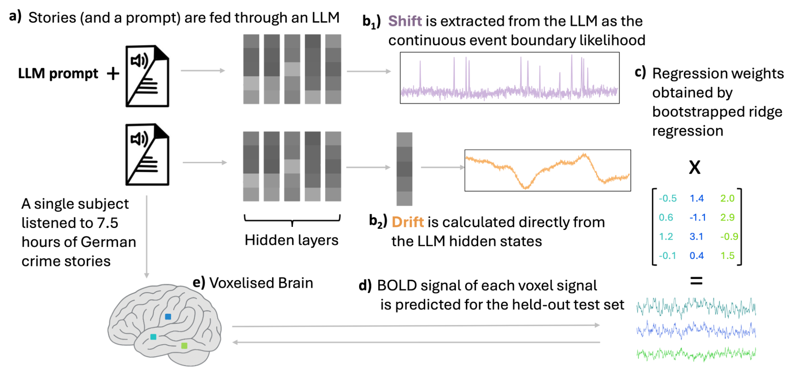
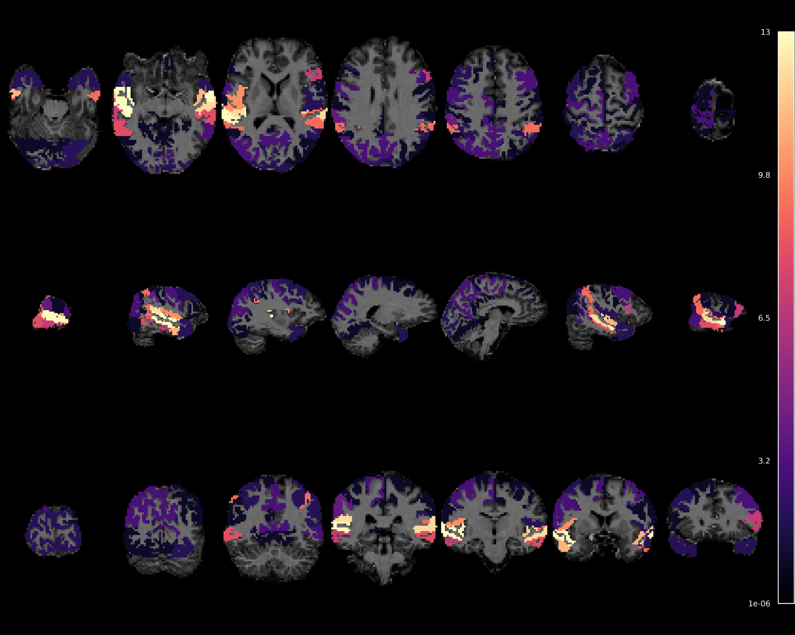
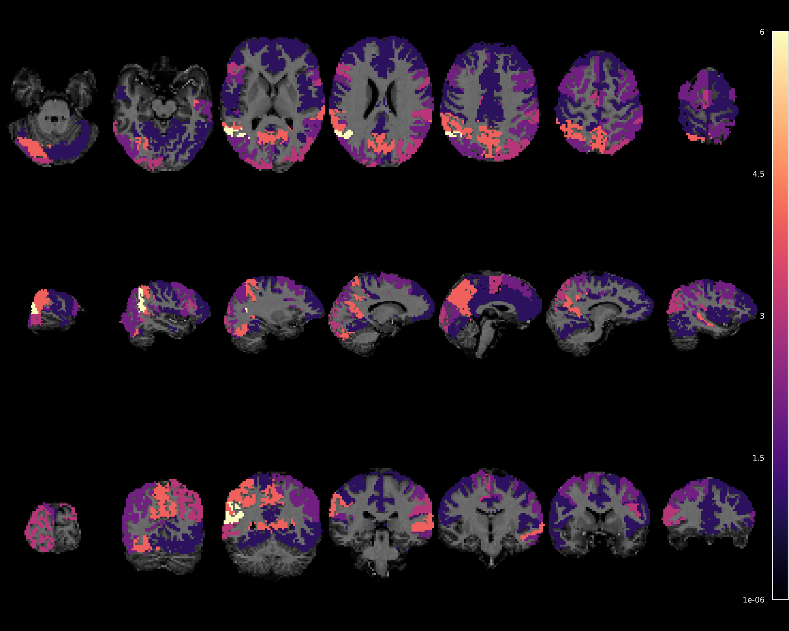
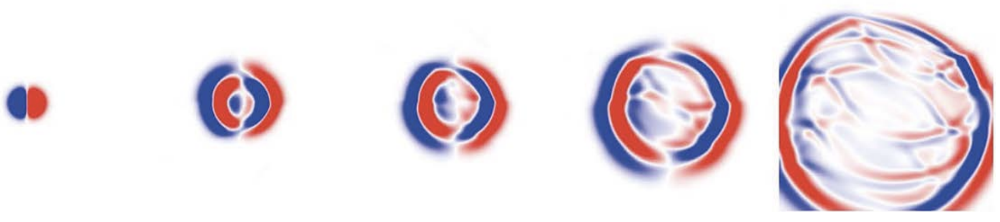

My PhD is on JWST observations of exoplanets. Before that, I worked on how the brain
processes stories, and on neural networks for seismic waves.
Exoplanet atmospheres with JWST
PhD · Imperial College London · ongoing
When a planet passes in front of its star, some of the starlight filters through the
planet's atmosphere. JWST measures how much light is blocked at each wavelength, and
from that we work out what the atmosphere is made of. The atmospheric signal is tiny,
so the result depends on how well the telescope, the detector and the transit itself
are accounted for.
This analysis is the focus of my PhD. I will write more here once the first papers
are out. Until then, my interactive
explainer covers the background, and the
Exoplanet Archive collects 40 planets and
what is known about them.
Artist's impression of a hot Jupiter, a gas giant orbiting very close to its star. Credit: NASA.
How the brain follows a story
HomanLab · Psychiatric University Hospital of Zürich

A large language model turns the story text into two signals, drift and shift.
Following a story takes two things at once: meaning that builds up slowly over many
sentences, and quick updates when the story moves to a new scene. We used a large
language model to derive one signal for each directly from the story text, without
manual annotation: drift for the slow build-up and shift for the
jumps at event boundaries.
We compared both signals with 7 Tesla fMRI of one volunteer who listened to more
than seven hours of crime stories. Drift predicted activity mainly in hubs of the
default-mode network. Shift predicted activity in the primary auditory cortex and in
language areas on both sides of the brain. The preprint is on
arXiv.

Shift: responses at event boundaries in auditory and language cortex.

Drift: slower responses in default-mode regions.
Physics-informed neural networks for seismology
Master's thesis · ETH Zürich · 2024
My master's thesis tested physics-informed neural networks (PINNs) on the elastic wave
equation, which describes how seismic waves travel through the Earth. Networks with
the wave physics built into their layers (wavelet and plane-wave layers, with an
encoder and a decoder) were about twice as accurate as standard PINNs.
Conditioning a network on the position of the seismic source gives the wavefield for
any source position in a single forward pass, much faster than a finite-difference
solver. The thesis was featured in the
British
Seismology Meeting 2024 report in Astronomy & Geophysics, and the full
text is in the
ETH Research Collection.

Elastic wavefields simulated by a physics-informed neural network.